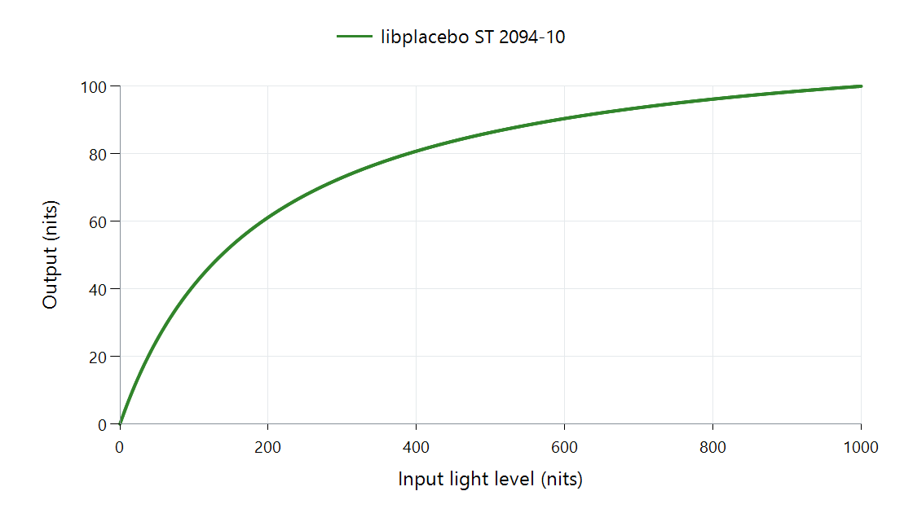

Tone Mapping Curve: ST 2094-10 in libplacebo
libplacebo's ST 2094-10 option fits a brightness relationship through a dark endpoint, a bright endpoint, and a selected adaptation point between them. It is based on the standard's informative Annex B.2, with source and destination assumptions supplied to the mapper.
The middle point can change the whole curve
Use a constructed zero-black example with source peak 1,000 nits and target peak 100. Two rational functions can meet those same endpoints while assigning another output to an input of 100:
| Illustrative function | At input 100 nits | At input 1,000 nits |
|---|---|---|
| 0.9x / (1 + 0.008x) | 50 nits | 100 nits |
| 0.3x / (1 + 0.002x) | 25 nits | 100 nits |
The changed intermediate constraint moves ordinary content even though black and peak stay fixed. This arithmetic illustrates why source statistics and adaptation-point selection are substantive inputs to a fitted mapping.

libplacebo 7.360.1 defaults, zero black, no scene-average value. This plot uses the implementation's default selection, not either illustrative function above.
For the plotted selection, 100 nits maps to about 41.21 nits, and 500 maps to about 86.32. Providing another scene-average input can change the selected middle relationship.
Supply the information before interpreting the name
The mapper can use scene brightness together with range information. A default selection still works when average information is absent. Scene adaptation covers how changing inputs are measured and stabilized across time.
The standard describes a wider color-volume metadata system. This specific library function implements the Annex B.2 brightness fit; its documented scope excludes the subjective gain, offset, and gamma controls of Annex B.3. Choosing this scalar function therefore identifies a mapping job, rather than a complete Dolby Vision decoder.
An Emby route can decode and interpret source material through one stage, then apply an available mapper with the information that reaches it. The playback-path article locates those jobs. The intermediate-point example explains why the mapper's supplied information changes the resulting picture.